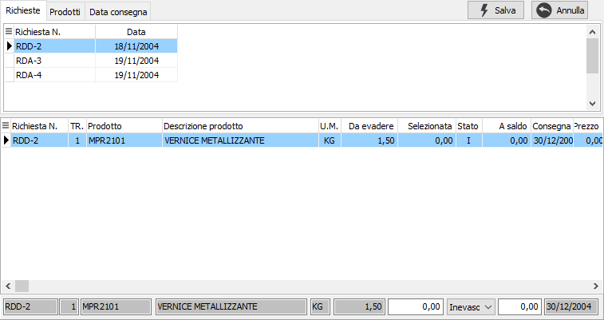
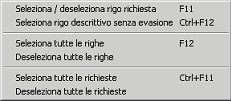

Evasione richieste di acquisto

La finestra è suddivisa in due sezioni.
Nella sezione superiore sono presenti i riferimenti alle richieste da evadere che possono essere ordinate e visualizzate per richiesta, per prodotto oppure per data consegna. Selezionando un elemento in questa sezione, tramite il mouse o spostandosi con le frecce, nella parte sottostante vengono visualizzati i dettagli delle righe relative.
Nella sezione inferiore è possibile scegliere quali righe, e con quali quantità, inserire nel documento.
La selezione e l'annullamento della stessa può avvenire in diversi modi. Per selezionare oppure annullare la selezione di un rigo è sufficiente fare doppio clic con il mouse sul rigo interessato (se selezionato verrà annullata la

selezione altrimenti il contrario). È anche possibile utilizzare il menù indicato a lato (attivato tramite la pressione del tasto destro del mouse) oppure utilizzare gli appositi tasti funzione. È consentito selezionare o deselezionare un solo rigo oppure tutte le righe oppure un intera richiesta. È anche consentito inserire manualmente la quantità nel pannello sottostante.Se attiva la gestione del dettaglio quantità per il documento in evasione o per il documento che si sta compilando, in automatico al momento dell'accesso al campo quantità, sarà visualizzata la relativa finestra di dettaglio quantità.
Se un rigo viene evaso completamente lo sfondo appare di colore giallo e nella colonna stato compare la lettera "E", se viene evaso parzialmente lo sfondo assume un colore giallo molto più chiaro e nella colonna stato appare la lettera "P", altrimenti lo sfondo rimane bianco e nella colonna stato è presente la lettera "I". È possibile anche indicare una quantità diversa da quella del rigo e cambiare manualmente lo stato del rigo tramite il combo presente nel pannello di inserimento dati. In questo caso se la quantità inserita è minore di quella da evadere viene richiesto se saldare il rigo altrimenti, se la quantità inserita è maggiore, viene saldato automaticamente per la differenza.
La pressione sul pulsante Esegui determina l'inserimento dei dati selezionati nel documento.